碉堡市
冒险的起点，故事的归宿。
碉堡市（Diaobao City），是一个位于先洁基地东南部、与耀青市隔海相望的城市。
城市因最早建立的一座小型碉堡而得名，并以此为城市核心逐渐向外扩展。
碉堡市地理位置优越，西北方向与设施完善、秩序井然的先洁基地接壤，两地在资源共享、技术交流等方面有着密切的互动，为碉堡市的发展提供了有力支撑；
东北方向则与活力满满的耀青市隔岸相望，宽阔的水域不仅为两座城市增添了灵动的自然景观，也催生了两地间独特的水上往来与经济文化交流。
从城市布局来看，以最初的小型碉堡为中心，各类建筑向四周有序延展，形成了功能分区明确、风格多样的城市格局。
北部的高耸建筑彰显着城市的大气与科技感，西部的工业区充满生产活力，南部的住宅区温馨宜居且兼具交通优势，东部的临海区域则为城市带来了海洋的浪漫与广阔。

碉堡市中心
历史沿革
碉堡市的历史，是一部从防御据点到繁荣都市的奋斗史。
最初，这里只是一片荒芜的方块土地，一位开拓者为抵御野外生物的侵袭，搭建起了一座小型碉堡。这座碉堡凭借坚固的结构，成为了周边少数幸存者的避难所，逐渐聚集了人气，形成了最初的城市雏形。
随着人口的增加与生产力的提升，城市开始向周边扩张。为了满足居民对更高生活品质的追求，城市建设者们决定以碉堡为中心，进行系统性的城市规划。于是在北部建造了用于指引方向、传递信号的信标铁制的金字塔，
这座高十层的金字塔不仅在功能上发挥着重要作用，更成为了碉堡市崛起的象征。随后，富有欧式风情的伊丽莎白塔大本钟也在北部落成，为城市增添了浓厚的文化气息。
在城市发展过程中，工业成为推动经济增长的重要引擎。建设者们看中了西部区域的广阔空间与便利交通，在此打造了以银白色色调为主的工业区，引入先进的方块工业技术，
使得碉堡市的工业实力逐步提升，产品不仅满足本地需求，还远销至先洁基地、耀青市等周边地区。
随着城市的繁荣，居民对居住环境的要求也日益提高。南部区域因其地势平坦、环境优美，成为了住宅区的首选之地。几大别墅住宅在此拔地而起，设计风格多样，内部设施完善，为居民提供了舒适宜居的生活空间。
同时，为了方便居民出行与对外交流，在最南端临海处建造了折跃门与铁路火车站，折跃门实现了跨区域的快速传送，铁路火车站则连接了远洋地区，极大地提升了碉堡市的交通便利性，进一步促进了城市的发展与繁荣。
行政区划
碉堡市以初始小型碉堡为地理中心，按功能与方位划分为五大功能区，各区域分工明确且协同发展：
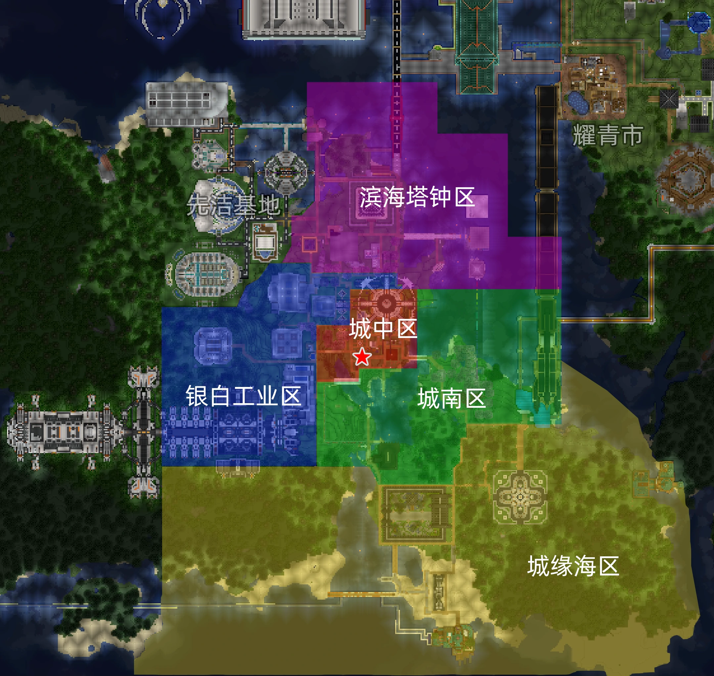
碉堡市行政区规划
-
城中区
以初始小型碉堡为核心，是展示城市历史、承载居民公共活动的核心区域，也是城市名称的起源地。
-
银白工业区
以银白色方块建筑为主，集中布局工业生产设施，涵盖资源生产、产品制造等功能，通过内部道路与南部交通枢纽连接，保障物资运输效率。
-
城南区
沿东部海岸线分布，部分区域配套休闲步道，可远眺耀青市，也建有耀青市域轻轨碉堡城南站，是居民休闲与观赏海景，交通集快速通勤的区域。
-
城缘海区
有着最长海岸线——南岸海岸线，以沙滩海域景观为主，也包含临海的折跃门与铁路火车站，是城市对外交通的核心节点。
-
滨海塔钟区
包含十层铁制信标金字塔与伊丽莎白塔（大本钟）两大地标，周边带有小型广场与纪念标识，兼具景观观赏、功能实用（信标指引）与文化体验功能，是城市对外展示的重要窗口。
建筑与地标
- 碉堡：城市起源与象征，位于市中心。
- 铁制信标金字塔：高十层，以海量资源建造，是城市的定位信标。
- 伊丽莎白塔：城市文化象征之一。
- 银白工业区建筑群：以矿石与银白色建筑风格著称，是城市的生产中心。
- 南大陆折跃门：位于南端海滨，用于前往下界。
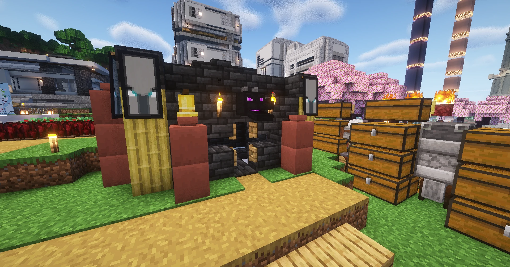
碉堡
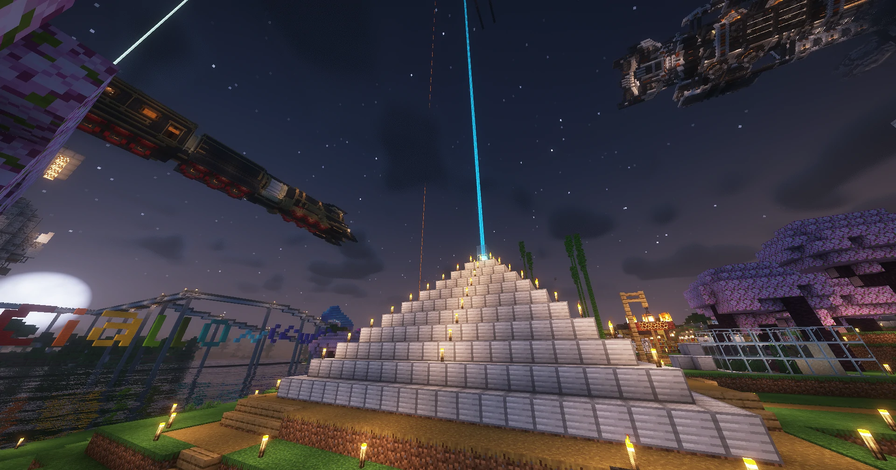
铁制信标金字塔
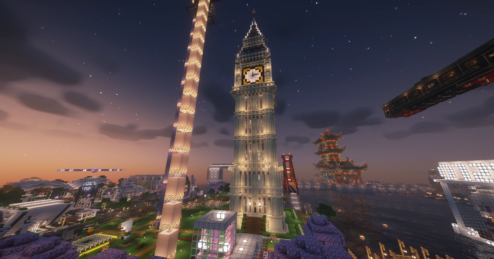
伊丽莎白塔
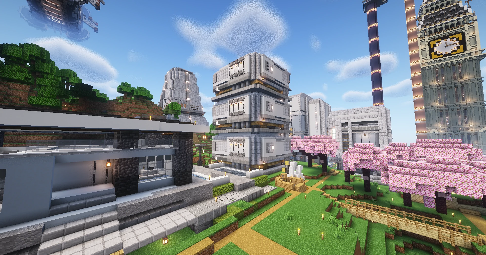
银白工业区建筑群
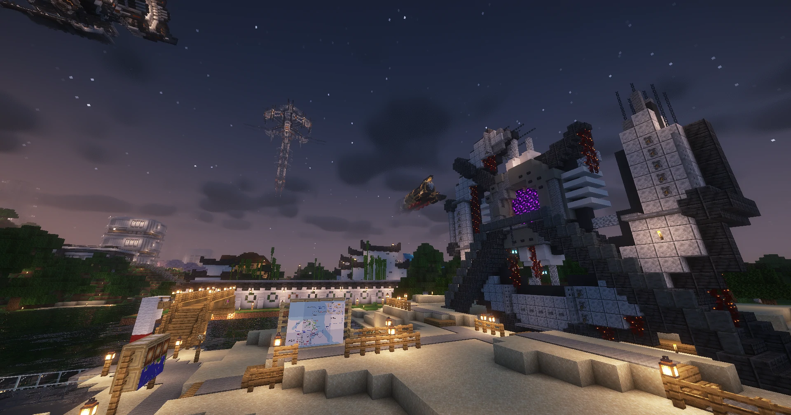
南大陆折跃门
城市交通
碉堡市的交通体系多样而完善，涵盖公路、地铁、铁路、航运与折跃门等多种方式，为市民与旅客提供了便捷的出行网络。
公路
碉堡市公路系统四通八达，各主要行政区之间均有公路连接。城市道路规划以环线与放射线相结合，确保城区与外围住宅、工业区之间的高效往来。
其中，道路分为人行道路和货行公路。人行道路仅行人通行，货行道路则不限行。
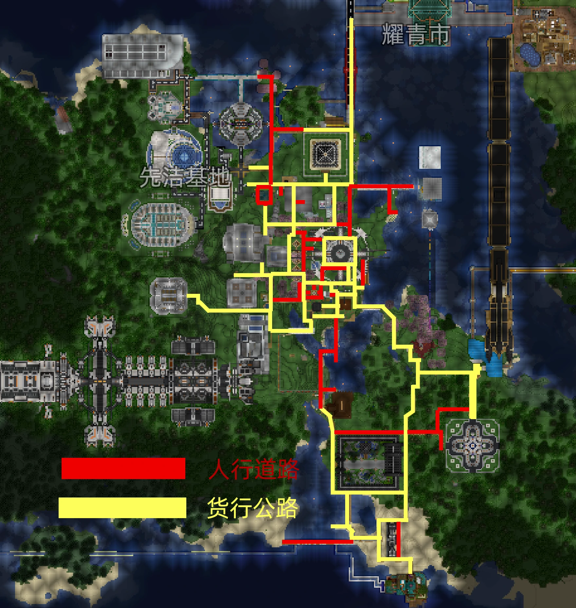
碉堡市道路规划
地铁
碉堡市地铁系统由 Leon's Metro Transit 负责运营，目前已开通多条线路，覆盖城市主要区域：
- 1号线：碉堡城区 ↔ 地狱入口，连接碉堡城区与下界门区域。此区域带有耀青市域轻轨碉堡城南站，可便捷换乘轻轨，直通耀青市。
- 2号线：碉堡城区 ↔ 试炼之地，连接碉堡城区与试炼之地区域。
- 3号线及支线：碉堡城区 ↔ 流萤广场/天空流星之塔，主线从碉堡城区贯通于流萤广场，休闲度假首要之选。支线则是服务于天空流星之塔，望风望景刷怪的第一选择。
- 4号线：碉堡城区 ↔ 城缘海，穿越江底，连接主城区与滨海区域，服务于南部别墅区与城缘海地区。
- 5号线：老坑站 ↔ 先遣圣洁基地，跨市线路，服务碉堡市与先洁基地。此线碉堡城轨站还可便携换乘碉堡耀青城际铁路。
地铁系统成为市民日常通勤的重要交通工具。
云巴
碉堡市云巴系统为市民提供了便捷的短途出行选择：
- 便捷云巴线：孤珀云宅 ↔ 主城湖畔站，将银白工业区居民区与地铁线网系统相连，便捷市民。
铁路
碉堡市拥有发达的铁路交通：
- 碉堡—耀青城际铁路：高速铁路，连接两市，适合旅游出行。
- 耀青市域轻轨铁路：线路直达碉堡耀青两市城区，满足跨区域出行通勤需求。
- 远洋南大陆西线：线路由碉堡市西行数千里至远洋地。
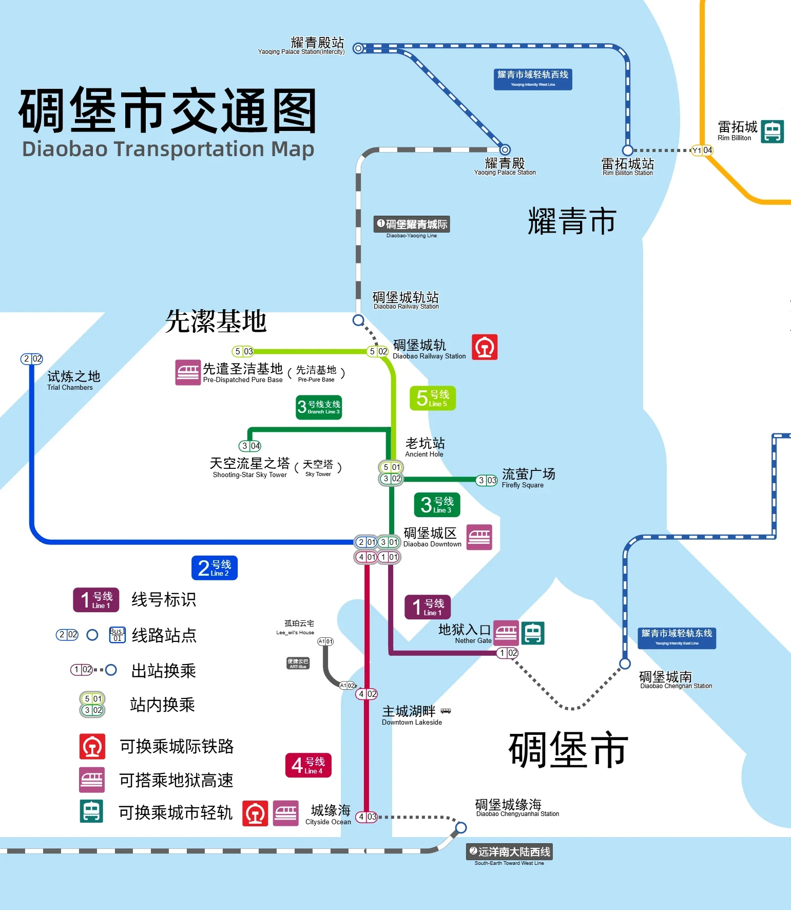
碉堡市轨道交通线路图
航运
碉堡市与耀青市之间亦有航道往来：
航道起点位于耀青市雷拓城港口，途经碉堡市滨海塔钟区，并经由碉堡市城南区，最终抵达城缘海区港口。航道兼具客运与货运功能，是两市交流的重要通道。
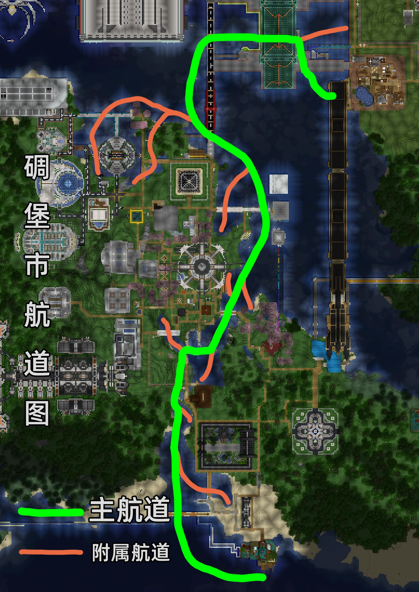
碉堡市航道图
折跃门(地狱高速)
碉堡市内有多个折跃门：
- 地狱入口折跃门：位于市区外环，供探险者与少量客运使用。
- 碉堡城区地铁站折跃门：与地铁系统相连，主要服务于短途旅客换乘。
- 南大陆折跃门：位于城市最南端海滨，是碉堡市最大的折跃门，兼具客运与货运功能，常被用于跨维度贸易与远程旅行。
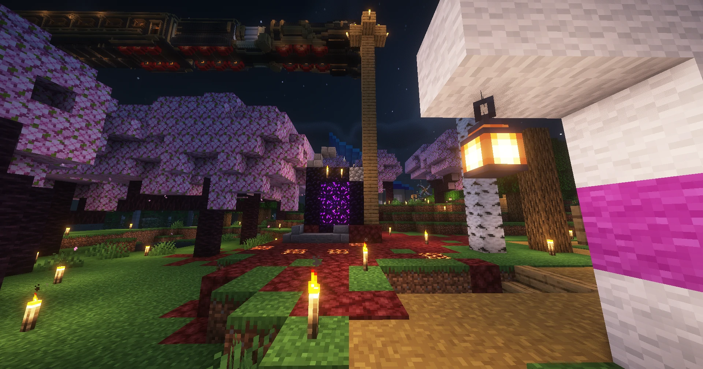
地狱入口折跃门
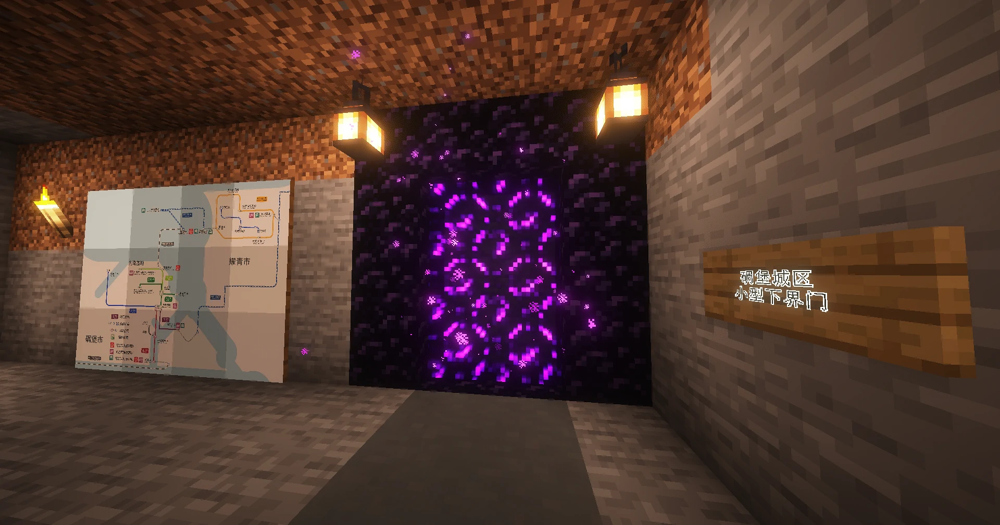
碉堡城区地铁站折跃门
南大陆折跃门
对外联系
与先洁基地
两地西北接壤，通过三条双向陆路道路和一条地铁线直接连通，主要开展工业物资（西部工业区产品）与资源（先洁基地特色物资）的双向贸易，同时存在居民日常往来与建设技术交流。
与耀青市
两地隔海相望，无直接陆路连通，居民主要通过三种方式往来：
一是从北部滨海塔钟区城际站乘坐铁路，抵达耀青市耀青殿；
二是从南部城南区轻轨站乘坐耀青市域轻轨，直线抵达耀青市城区竹泉镇；
三是沿着航道带乘坐船只，经北部海域抵达耀青市雷拓城港口，两地间文化交流与休闲互动较为频繁。